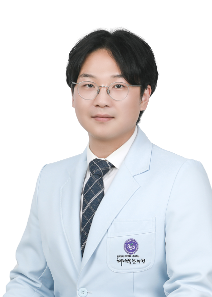

동탄에서 이어온 척추·관절 진료
척추·관절 통증,
일상의 움직임까지.
목·허리부터 어깨·무릎까지.
증상을 살피고, 필요한 진료를 안내합니다.

먼저 듣고,
함께 진료 방향을 찾습니다.
해나무한의원의 진료 원칙
충분히 듣고 세심하게 살펴,
필요한 치료를 선택합니다.
충분한 문진
통증의 시작과 양상, 생활 속 불편함을 듣습니다.
세심한 진찰
움직임과 통증 양상, 몸의 상태를 살핍니다.
필요한 치료 선택
진찰 결과를 설명하고 적합한 치료 방향을 함께 정합니다.
이런 통증을
진료합니다.
척추·관절 질환부터 손상 후 통증까지, 증상의 양상과 몸의 상태를 함께 살펴 진료합니다.
목·허리 디스크 및 척추 질환
디스크·협착증 관련 통증과 저림
자세히 보기 ↗ 02어깨·무릎 등 관절 질환
관절 통증·움직임 제한
자세히 보기 ↗ 03스포츠 손상
운동 중 부상·관절 및 근육 통증
자세히 보기 ↗ 04교통사고
사고 후 목·허리 등 통증
자세히 보기 ↗갑작스러운 마비·심한 외상 등은 응급 진료가 우선입니다.
척추·관절 진료 안내 ↗초음파를 활용하는 진료
초음파 유도하 경혈 약침부터,
추나·침 치료까지.
확인 가능한 해부학적 구조를 영상으로 살펴보고, 진찰 결과에 맞춰 치료를 선택합니다.
 HAENAMU · CARE
HAENAMU · CARE
통증 외에도
이런 진료를 합니다.
체중 관리부터 한약 처방까지, 개인의 상태를 살핍니다.

그 밖의 한의 진료
소화불편·두통·어지럼증 등 다양한 증상을 상담합니다. 갑작스러운 심한 두통·마비 등은 응급 진료가 우선입니다.
세 명의 한의사가
함께 진료합니다.
세 원장 모두 근골격계 초음파 관련 자격을 보유하고 있습니다. 상세 학력과 경력도 확인해 보세요.

김성수 원장
01자생한방병원 출신의 한의학박사
- 침구의학과 전문의
- 경희대학교 동서의학박사(최우수논문상)
- 전) 자생한방병원 진료원장
- 전) 네이버 지식iN 공식 한의사
- 미국 의사 인증 및 진흥협회(APCA) 관련 자격 기재
- 국제 근골격계 초음파 자격(RMSK) 기재
- 전) 경기도 한의사회 보험이사

최영재 원장
02미국 초음파 자격증 보유
- 원광대학교 한의과대학 졸업
- 미국 의사 인증 및 진흥협회(APCA) 관련 자격 기재
- 국제 근골격계 초음파 자격(RMSK) 기재
- 전) 네이버 지식iN 공식 한의사
- 대한침도의학회 회원

박세운 원장
03대학병원 교수 출신 전문의
- 침구의학과 전문의
- 한의학 석사
- 대전대학교 청주한방병원 진료교수
- 원광대학교 산본한방병원 진료교수
- 미국 의사 인증 및 진흥협회(APCA) 관련 자격 기재
- 국제 근골격계 초음파 자격(RMSK) 기재
- 전) 네이버 지식iN 공식 한의사
방문 전 최신 진료 일정을 확인해 주세요.
의료진 진료 일정 확인방문 전,
궁금한 점.
자주 묻는 질문을 모았습니다.
첫 방문 시 준비할 것이 있나요?
증상이 시작된 시점, 복용 약물, 기존 검사·치료 내용을 알려주세요. 관련 자료가 있다면 지참하셔도 좋습니다.
초음파 검사는 모든 환자에게 진행하나요?
아닙니다. 증상과 확인할 조직에 따라 필요 여부를 판단합니다.
초음파 유도하 경혈 약침은 무엇인가요?
초음파 영상을 보면서 시술 목표 부위와 주변 구조를 확인하는 약침 시술입니다. 모든 환자에게 적용하지는 않습니다.
교통사고 자동차보험 진료는 어떻게 하나요?
보험 조건과 진료 내용에 따라 다릅니다. 방문 전 전화로 문의해 주세요.
일요일·공휴일에도 진료하나요?
기본 운영시간은 09:30–15:00입니다. 임시 변경 여부를 확인해 주세요.
예약 없이 방문해도 되나요?
대기가 발생하거나 접수가 마감될 수 있습니다. 예약 후 방문을 권합니다.
진료비는 어디서 확인하나요?
비급여 진료비 안내를 확인하세요. 실제 비용은 처방·용량에 따라 달라질 수 있습니다.
진료 일정,
미리 확인하세요.
원장별 기본 진료 요일과 변경 일정을 안내합니다.
방문 전 예약 가능 여부를 확인해 주세요.
| 월 | 화 | 수 | 목 | 금 | 토 | 일 |
|---|---|---|---|---|---|---|
| 김성수 | 박세운 | 김성수 최영재 | 최영재 | 김성수 | 김성수 | 최영재 |
휴진·대진 및 공휴일에는 변경될 수 있습니다.
월별 일정을 불러오는 중입니다.
오시는 길과
진료시간.
경기도 화성시 동탄솔빛로 47, 2층
나루마을 새마을금고 옆
거기부동산·행복한밥상이 있는 건물 2층
031-8003-3653
건물 지하 주차장: 진료시간 주차 지원
건물 뒤 공영주차장: 기존 안내 기준 1시간 30분 무료
※ 주차 지원 조건은 변동될 수 있으므로 방문 전 확인해 주세요.
평일·토요일 점심시간 13:00–14:00 / 일요일·공휴일 점심시간 없음
접수는 진료 마감 30분 전 종료